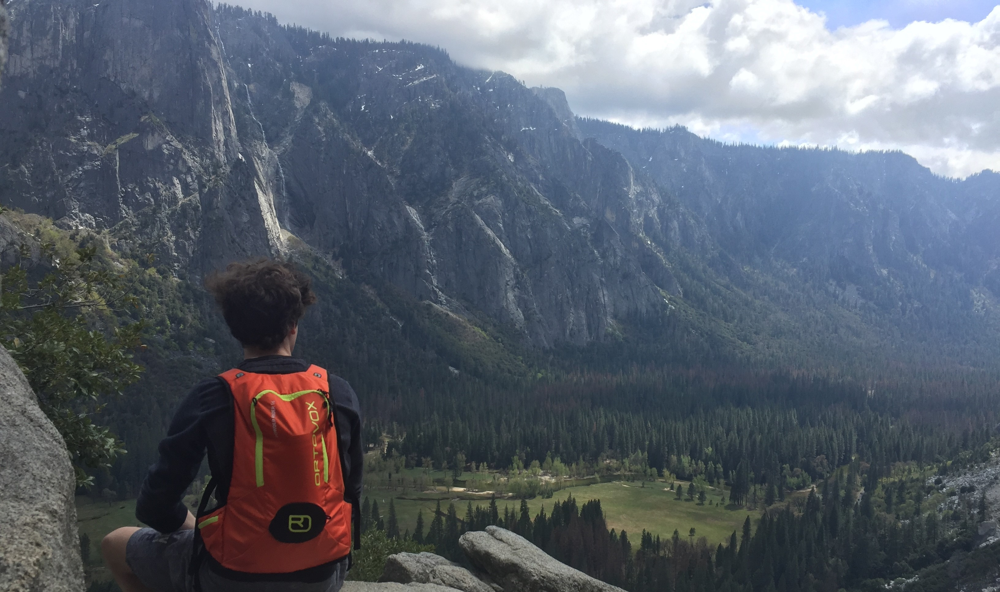

Ceteris Paribus is a webpage I created for the ICT, Labour and Inequality course at the School of Business and Economics in Maastricht.

Hey! My name is Jonas. I am 20 years old, and currently in the second year of my Bachelor, studying Economics at Maastricht University. I actually did not want to study Economics orginally, but for some reason I ended up here. Nevertheless, throughout my first year I came to like Economics quite a lot, so I decided to stick with it. Besides school, I enjoy playing video games (whenever I find the time) and I am always down for a boardgame night with friends. I also like to go skiing whenever I get the opportunity in the winter and my favourite TV-show since childhood is Avatar: The Last Airbender.
So why did I name this website "ceteris paribus"? When you start studying Economics, you are immediately confronted with this phrase. And not only that, it it will always come back to you, because it is just an assumption Economists like to make. But it is not just any assumption, I believe those two words are a crucial part that allows us to even make any kind of conlcusions in Economics in the first place. And because we often tend to forget about it or to take it for given, I named this website ceteris paribus to remind us that often: everything else is held constant.
Throughout our studies at SBE, we had to write various course papers either on our own or as part of a group. Down below, you find the papers that I have been working on with. They are not directly related to ICT, which is why I just uploaded them as PDFs on this website to have some extra content.
Instead of optimising production or delivering better products, companies within a cartel agree to fix prices and limit production, thus consumers are provided with lower quality goods and services at non-competitive prices. The goal of this paper is to analyse the negative impact of cartels by using economic tools, linking the analysis to the cartel case of climate component supplier, and to further determine the importance of fighting cartels.
The governor of the Danmarks Nationalbank Lars Rohde is determined to “do whatever it takes to maintain the peg”. The commitment to the peg is reflecting the conviction of its favourable consequences for the Danish economy. This paper aims to ascertain those benefits in order to answer the guiding question of this paper: “Why is Denmark so eager to maintain its peg?”
This paper was an introduction into Academic Writing and written for the First-Year Microeconomics course.
This paper was a group project and written for the First-Year International Economic Relations course.
A considerable amount of Norway’s current wealth and economic strength can be traced back to the discovery of natural resources, namely oil, and their strong public sector, which ensured that the returns of those resources would be handled in a sustainable matter. Especially given recent times of increasing worldwide uncertainty and diminishing oil returns, the actions of the Norwegian government to reduce their country’s dependency on oil become all the more important. This paper aims to illustrate Norway’s dependency on oil by applying a theoretical framework and comparing its prediction to empirical data.
This paper was a group project and written for the Second-Year Macroeconomics and Economic Policy course.
This is just a picture of me skiing to fill the gap. And yup, I take my orange backpack with me everyhere.